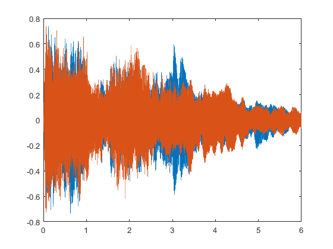
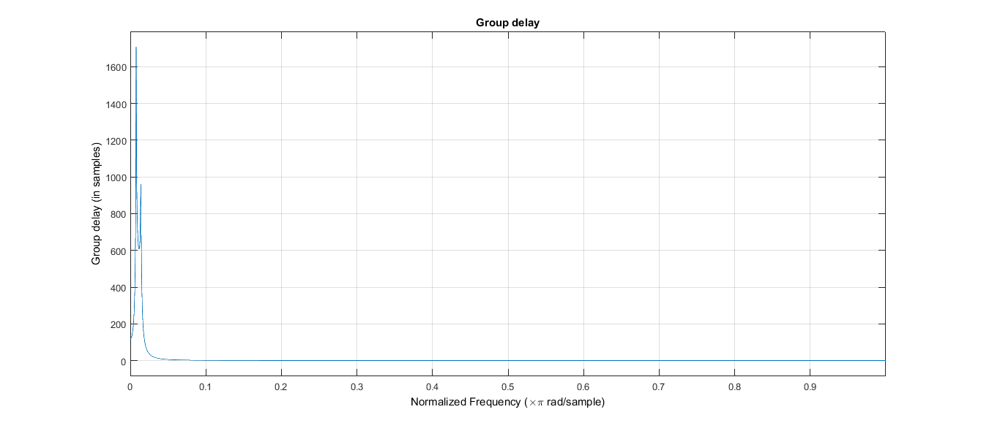
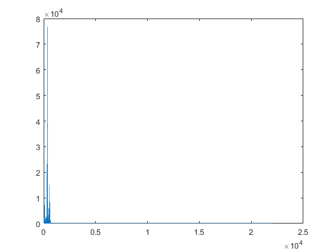

file_name = 'strings4.wav';
[x,Fs]=audioread(file_name);
rate = Fs;
sound(x, rate);
Nfft = length(x);
f=linspace(0, Fs, Nfft);
G=abs(fft(x, Nfft));
plot(f(1:Nfft/2), G(1:Nfft/2));
t = linspace(0,length(x)/Fs,length(x));
plot(t,x);
band_1 = IIR_ButterWorth_1(Fs);
band_2 = IIR_ButterWorth_2(Fs);
band_3 = IIR_ButterWorth_3(Fs);
band_4 = IIR_ButterWorth_4(Fs);
band_5 = IIR_ButterWorth_5(Fs);
band_6 = IIR_ButterWorth_6(Fs);
band_7 = IIR_ButterWorth_7(Fs);
band_8 = IIR_ButterWorth_8(Fs);
band_9 = IIR_ButterWorth_9(Fs);
grpdelay(band_2);
signal_1=filter(band_1, x);
signal_2=filter(band_2, x);
signal_3=filter(band_3, x);
signal_4=filter(band_4, x);
signal_5=filter(band_5, x);
signal_6=filter(band_6, x);
signal_7=filter(band_7, x);
signal_8=filter(band_8, x);
signal_9=filter(band_9, x);
gain_1 = 10;
gain_2 = 0;
gain_3 = 10;
gain_4 = 0;
gain_5 = 10;
gain_6 = 0;
gain_7 = 10;
gain_8 = 0;
gain_9 = 10;
signal_1=signal_1*(10^(gain_1/20));
signal_2=signal_2*(10^(gain_2/20));
signal_3=signal_3*(10^(gain_3/20));
signal_4=signal_4*(10^(gain_4/20));
signal_5=signal_5*(10^(gain_5/20));
signal_6=signal_6*(10^(gain_6/20));
signal_7=signal_7*(10^(gain_7/20));
signal_8=signal_8*(10^(gain_8/20));
signal_9=signal_9*(10^(gain_9/20));
composite_signal = signal_1 + signal_2 + signal_3 + signal_4 + signal_5 + signal_6 + signal_7 + signal_8 + signal_9;
t = linspace(0,length(composite_signal)/Fs,length(composite_signal));
plot(t,composite_signal);
Nfft = length(composite_signal);
f=linspace(0, Fs, Nfft);
G=abs(fft(composite_signal, Nfft));
plot(f(1:Nfft/2), G(1:Nfft/2));
sound(composite_signal, rate);
audiowrite('file.wav',composite_signal,Fs);
gain_1 = 10;
gain_2 = 0;
gain_3 = 0;
gain_4 = 0;
gain_5 = 0;
gain_6 = 0;
gain_7 = 0;
gain_8 = 0;
gain_9 = 0;
Warning: Data clipped when writing file.
  